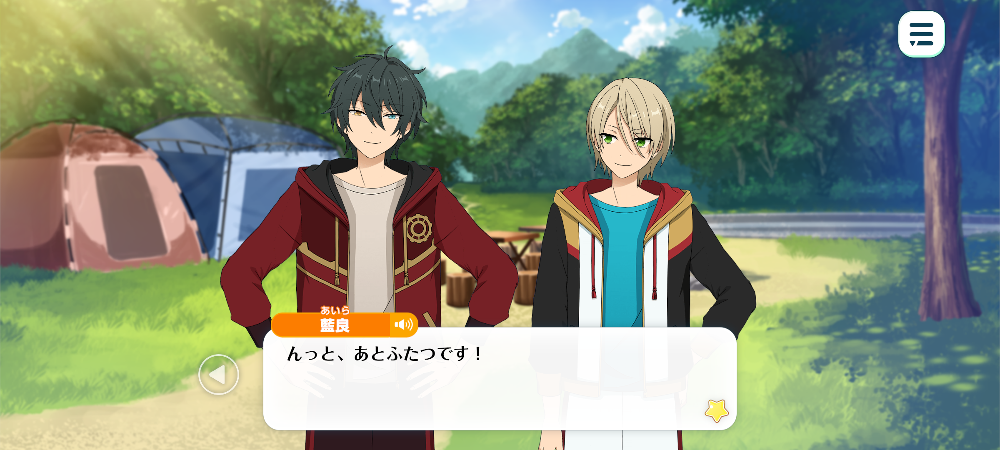
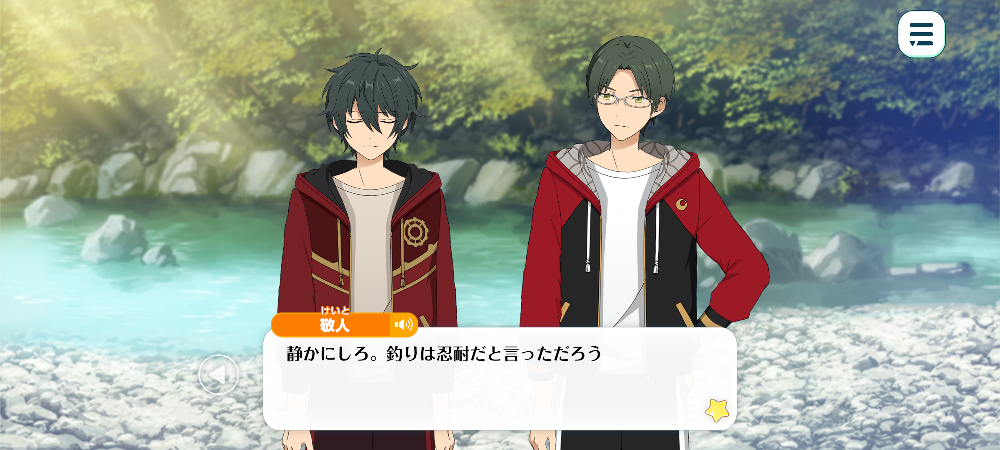
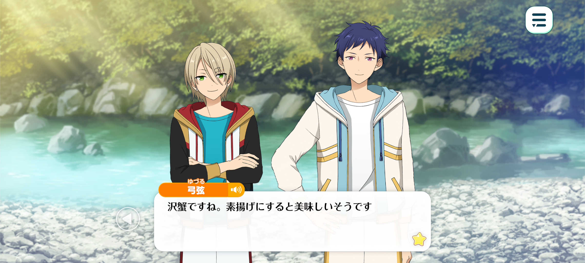
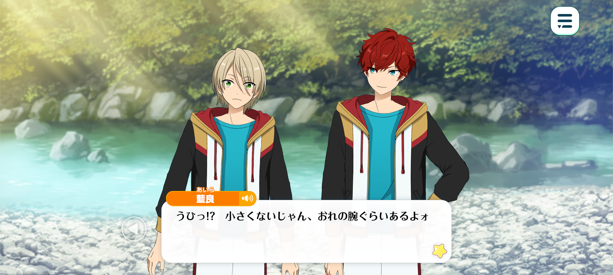
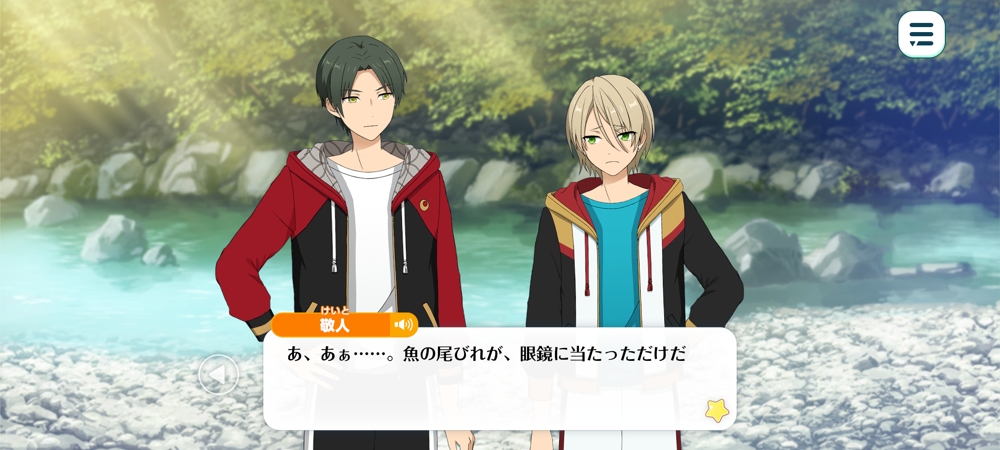
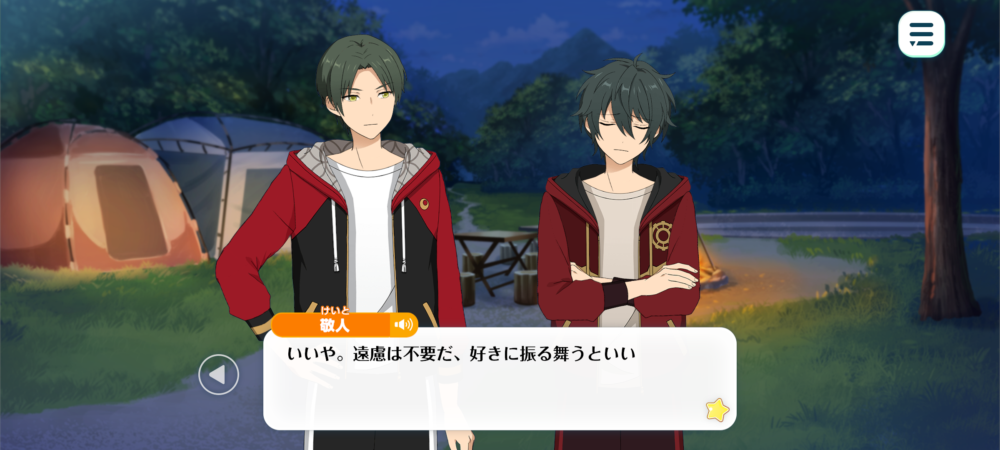

Scout! Keito Lecture
Summer Foam – Chapter 5



Mika: Hammerin’ the post until it's firmly in the ground. And…
…There we go~! How's it lookin', Shiratori-kun?
Aira: Uh, just two more to go!
Mika: Then I'll give ya a hand. Pass me one~.
Nfufu. D'ya know, this thing's called a “peg”, too? Makes a real nice sound when ya hammer it in.
Bam, bam…♪
Keito: You seem to be enjoying yourself, Kagehira.
Mika: Hasumi-senpai. We've just about finished puttin' up the tent~
Keito: Well done. We've finished collecting water over here, too. As for Fushimi and Amagi…
Hiiro: Sorry to keep you waiting. We bought some firewood from the campsite office!
Yuzuru: I also managed to borrow some fishing equipment.
Mika: Fishing equipment? Hasumi-senpai, is fishin' one of your hobbies?
Keito: I wouldn't go so far as to call it a hobby, but I do have a little experience.
Kiryu mentioned that this river is good for fishing. Shall we go and have a look?
Time: After a while

Mika: ...
…Naaaaah! I haven't caught a single thing! Are we sure there are any fish in here?
Keito: Keep your voice down. Don't you know that fishing requires patience?
You could say it's a test of endurance. There's no need to rush. Just wait for your opportunity.
Mika: Even if ya tell me to wait for an opportunity, nothin's happenin'. You haven't caught anything either, Hasumi-senpai.
Keito: So what? River fishing is more difficult than sea fishing, so don't give up just yet.
…Hm? The bait's gone. I made sure it was attached securely, but I suppose the current must have carried it away.
Ah, that's good news. There are fish here after all. Just hang in there a little longer, Kagehira.
Time: Around the same time

Aira: Look, look! There's a tiny little crab! How rabu~i! ♪
Yuzuru: It's a freshwater crab. Apparently, they're delicious when fried.
Aira: Uwahh, I couldn't eat the little guy…! I'll move him somewhere else so nobody finds him.
Yuzuru: Fufu. How kind of you, Shiratori-sama.
I'll be preparing tonight's dinner, so if you'll excuse me.
Aira: 'Kay. I'm looking forward to the barbecue!
Oi, Hiro-kun. You've been staring at the river for a while. Have you spotted something?

Hiiro: Umu. There's a small fish.
Aira: Really? Let me see…
Hyagh!? That’s not small, it’s practically the size of my arm!
Hiiro: Oh? The fish back in my hometown are much bigger.
I wonder what the fish here taste like. I'll catch one.
Aira: You're going to catch it with your bare hands…? That's impossible! It'll just slip right out of your grip and get away!
Hiiro: Why do you say that? We'll never know unless we try.
——Hyah!
Aira: Uwaa, you caught it on your first try…
Hiiro: Alright! Let's take it back to the tent. Fushimi-senpai can prepare it for us.
…Whoa. Fufu, it's quite lively.
Aira: This is no time to laugh! It's thrashing around in your arms! It's going to escape any second!
Hiiro: Fumu. I'll hold the tail, and you can hold the other end. If we carry it together, we'll be able to get it back safely.
Aira: Eh? I have to help too…?
Gyah! It's so slimy! It feels disgusting! N-no way! Absolutely not! Hiro-kun, you hold it by yourself!
Keito: …You two, keep it down. I've brought a bucket, so put the fish in here.
Hiiro: Thank you, Hasumi-senpai.
Keito: Compared to the fish Kagehira and I caught, this one's enormous. Perhaps it's the river god——
Gah…

Aira: Are you okay, Hasumi-senpai?
Keito: A-ah… The fish's tail just knocked my glasses off…
…? Everything's gone blurry…
Without my glasses, I can’t…!?
Aira: Whoa, they actually flew into the river——!
Hiro-kun, his glasses! Look for his glasses!
Hiiro: Umu, on it!
Mika: Hellooo~! What's all the fuss about?
Keito: That voice… Is that Kagehira?
Mika: Yup, it’s me~.
…Huh? Maybe it's just my imagination, but Hasumi-senpai's face looks a bit different…
Keito: My glasses… They're practically part of me. They couldn't have been knocked that far away…
I can't move around like this. I might trip and fall, so I’m stuck where I stand.
Mika: Ah. Looks like Hiiro-kun and the others are fishin' around on the riverbed~.
Eh, ya lost your glasses!? Are ya alright? Can ya breathe?
Keito: What do you take me for...? Don't worry. Aside from my impaired vision, I'm perfectly fine.
I'm sorry to ask, but could you guide me over to the grass? There are too many pebbles around here, and I'd rather not risk tripping.
Mika: Sure thing. I'll take yer hand, so just walk nice and slow.
C'mon, big steps! That's it, you're doin' great~…♪[1]
Fufu. Back home, I used to look after all the little ones, so I'd do this with them, too~
Keito: To be treated like an infant… How utterly incorrigible.
Time: A few hours later

Yuzuru: …It's thoroughly cooked now, so it's ready to eat. Everyone, please enjoy.
Mika: Yep! Thanks for the food~! ♪
Fufu, this is delicious! It feels extra special knowin' we caught the fish ourselves.
Keito: …
Hiiro: …
Aira: …
Mika: Nngaa~… I'm the only one talkin' here. Guess I'll keep quiet too.
Keito: No. There's no need to change how you act. Please, carry on as you normally would.
Amagi, and the rest of you as well. Don't you think it's rather dull to eat in silence?
…It's unfortunate that I've lost my glasses, but it's not as though this has never happened before.
Unexpected trouble is simply a part of life. It would be unhealthy to dwell on every little setback.
I have plenty of spare pairs back at the dorm, so please don't let this spoil your day. I don't want any of you worrying about me.
Hiiro: …
…Wait here. This time, I'm definitely going to find them!
Keito: Amagi? Hey! What do you think you're doing?
Yuzuru: He's running towards the river. I'll go after him.
Aira: I-I'll come too! Hngh… Hiro-kun, what are you planning to do?